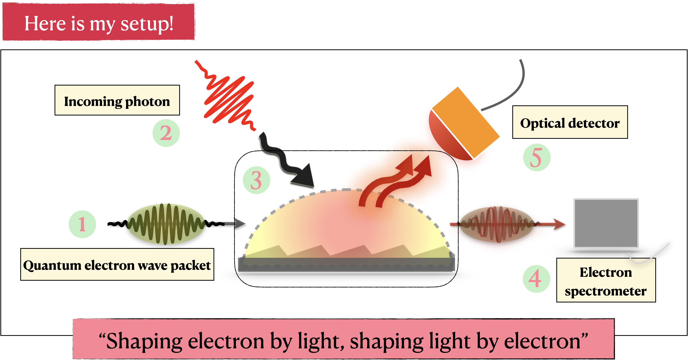
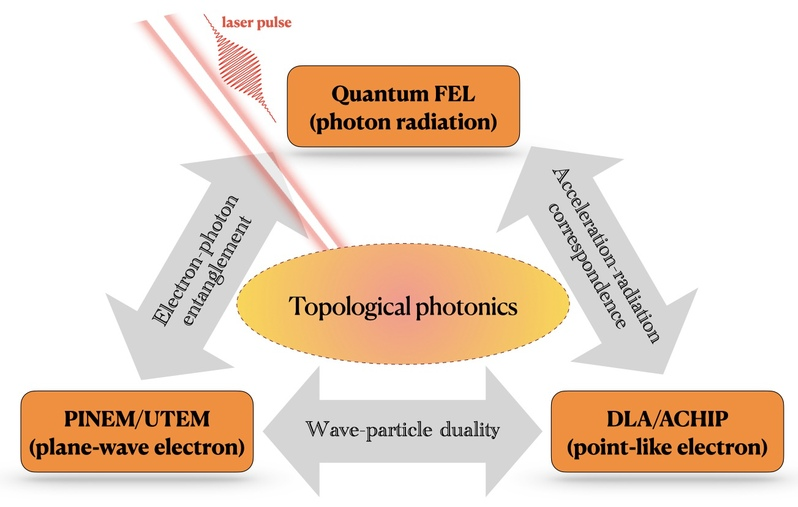
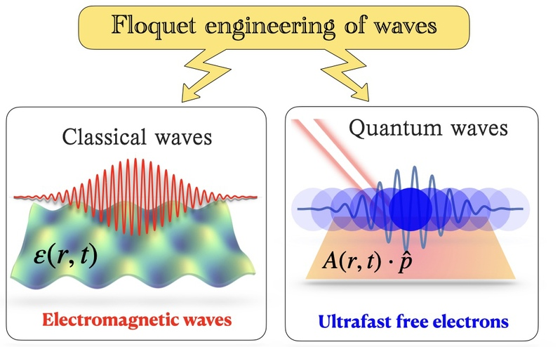
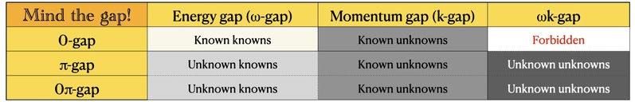
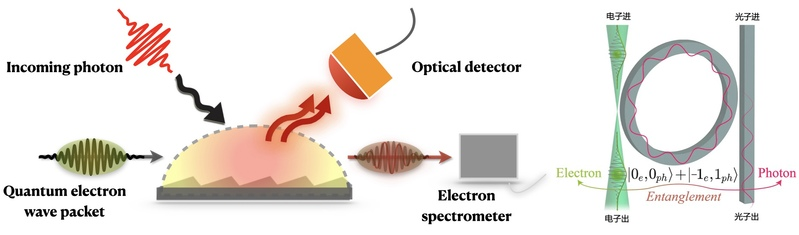

超快、强场与量子光物质相互作用
激光诱导的自由电子加速(DLA)和自由电子辐射(FEL)
光子诱导的近场电子显微镜(PINEM)
阿秒动力学调控以及量子弱测量
量子，量子，还是TMD量子！强场，强场，还是TMD强场！
在强场和量子领域中，研究自由电子和光的相互作用。应用物理目标是实现电子和光场之间的能量、动量和信息的可控转移；基础物理目标是探索电磁相互作用的深层结构。
激光诱导的自由电子加速(DLA)和自由电子辐射(FEL)
光子诱导的近场电子显微镜(PINEM)
阿秒动力学调控以及量子弱测量
激光直写，等离子体激化，微波等波导中的拓扑光子学。
超快PINEM电子合成维度。拓扑Floquet时间晶体，非线性光子时间晶体。
时间调制的动量带隙孤子，次谐波产生和非线性调制不稳定性等。
Weyl半金属的手性输运，二维材料的量子输运，Weyl半金属光学行为。
在周期驱动系统中的量子反常和Callan-Harvey机制。
自由电子量子光学（QFEL、DLA、UTEM）、自由电子凝聚态物理（material-free）、光子时空晶体、量子反常、光孤子、对偶性与量子弱测量，以及神经算子和 Koopman 算子（AI4Science）。
我们关心电子本身、光本身；材料是实现相位匹配与场增强的媒介。

“Shaping electron with light,— Ido Kaminer · Technion
shaping light with electron.”
“潘兄，会不会光就是电，电就是光？” — Zhaopin Chen · Technion
电子不只是一颗带电粒子，也是一束可以被光雕刻的量子波。我们研究超快电子与近场光的相互作用，将电子能量边带用作合成维度，探索电子加速、波函数重构、干涉与量子态调控。
从 PINEM、介质激光加速到超快电子显微镜，理论模型和实验平台共同回答一个问题：如何控制并读出光与自由电子交换的能量、动量和量子信息？

[Rep. Prog. Phys. 88 017601(2025); PRL 132, 3 (2024): 035001; Light Science & Applications 12:267 (2023); Science Advances 9, eadg8516(2023); PRL 126, 137403 (2021); PRL122.183204 (2019).]
空间周期改变能带，时间周期则打开动量带隙。我们关注时空调制、非线性与拓扑如何共同塑造光场，从增益与衰减的平衡走向局域波包和量子关联。
• Floquet engineering in optics and condensed matters: Floquet engineering is a paradigm of tailoring and manipulating a system by a periodic drive [Nature Communications (2022); Laser & Photon. Rev. (2022); Laser & Photon. Rev. (2015)].

• Momentum gaps (k-gaps) and energy-momentum gaps(ωk-gaps) [PRL 130, 233801 (2023)]

研究 k-gap 晶格中的 Bloch 振荡与带间干涉，探索自平衡动力学，以及动量带隙放大对固体高次谐波的影响。
在能量—动量混合带隙中研究 event soliton 与拓扑事件波包，探索非线性局域、拓扑保护和相位可控的成对湮灭。
进一步研究呼吸 k-gap 事件、孤子的量子化与双光子统计，以及有限时间晶体中的 Stokes 成对机制。以下工作目前以预印本形式公开。
• Ultrafast electron generation and manipulation, and strong-field electron photon coupling at discontinuity.
• Design an ultrafast photoelectron gun and realize multi-photon free-free transition for low-energy free electrons.
• Floquet quantum simulators: optics, microwave, sounds, atoms and free electrons.

科学原理：
一言以蔽之，实现和探测超快电子和超快光子的量子纠缠！
基础科学价值和产品化应用前景：
首先，结合光学探测器和直接电子探测器实现时间关联符合测量，用于研究自由电子和光子的量子纠缠。其次，完成平台搭建后，进行优化和升级，并最终实现产品化，实现“超快电子量子显微镜”可广泛使用的实验平台！